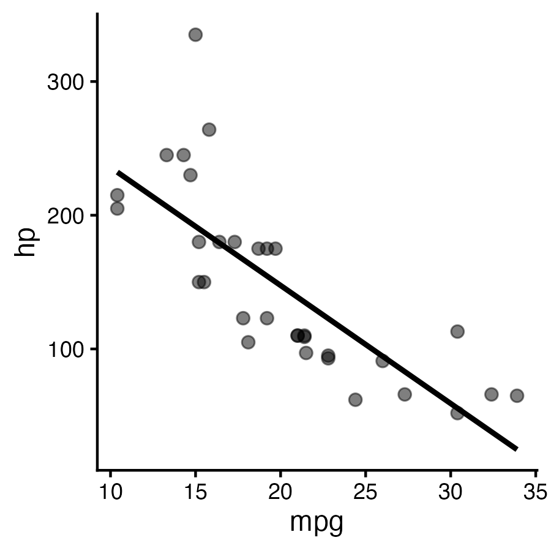
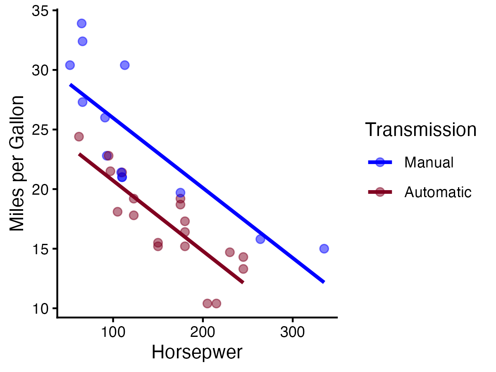

library(tidyverse)Week 3: September 18 2025
Anytime I will be running exploratory data analysis I start by loading up the
tidyversepackage.The
tidyverseis a conglomerate package that containsggplot2and assorted other packages that assist with data wrangling.
Today’s Topic: Intro to Multiple Regression
In order to explore multiple regression modelling, we need to acquire some data to work with. Today, I’ll demonstrate this analysis approach using a famous dataset that comes with Rstudio.
The mtcars Dataset
mtcars is a dataset that comes pre-loaded in Rstudio. It’s a great resource to practice analyses because there are many robust effects present in this dataset. The mtcars dataset is what we would refer to as a “toy dataset”; it was sepcifically designed to showcase statistical effects. Real world datasets do not always contain such robust relationships.
You can use the ? in Rstudio to get information about the mtcars dataset:
?mtcarsRunning this line of code will open up the help panel in the lower right-hand quadrent of the screen.
The help panel will provide information about what kind of information is contianed in each column of the dataset.
Assigning the mtcars dataset onto an object:
dat <- mtcarsmtcarsis always present in the working environment, but it is hidden (you won’t see it in the environment tab)I prefer to assign the datset onto a visible object as I find this makes it easier to work with.
The line of code above assigns the
mtcarsdataset onto an object in the environment nameddat.
Recall: Simple Regression
Any regression model that contains only a single predictor is consdiered to be a simple regression model. Simple regression modeling is very useful for understanding relationships between pairs of variables.
For example, if we wanted to understand the relationship between a car’s horsepower and it’s fuel efficiency, we could run a simple regression:
options(scipen = 999)
res <- lm(mpg ~ hp, data = dat)
summary(res)
Call:
lm(formula = mpg ~ hp, data = dat)
Residuals:
Min 1Q Median 3Q Max
-5.7121 -2.1122 -0.8854 1.5819 8.2360
Coefficients:
Estimate Std. Error t value Pr(>|t|)
(Intercept) 30.09886 1.63392 18.421 < 0.0000000000000002 ***
hp -0.06823 0.01012 -6.742 0.000000179 ***
---
Signif. codes: 0 '***' 0.001 '**' 0.01 '*' 0.05 '.' 0.1 ' ' 1
Residual standard error: 3.863 on 30 degrees of freedom
Multiple R-squared: 0.6024, Adjusted R-squared: 0.5892
F-statistic: 45.46 on 1 and 30 DF, p-value: 0.0000001788There is a strong and significant relationship between cars’ horsepower and their mileage.
Variance in fuel efficiency accounts for 60% of variance in horsepower (\(R^2\) = 0.60).
A 1-unit increase in horsepower is associated with a 0.06-unit decrease in the number of miles the car can travel per gallon of fuel.
# Create a scatterplot
a <- dat %>%
ggplot(aes(x = mpg, y = hp)) +
geom_point(size = 2, alpha = 0.5) +
geom_smooth(method = "lm", colour = "black", se = FALSE)+
theme_classic()
# Save the chart off as a high quality .png image
ggsave("chart_1.png", a, height = 3, width = 3, dpi = 300)
# Call the high quality .png image back
knitr::include_graphics("chart_1.png")
Multiple Regression
In contrast to simple regression, any analysis that inovlves entering multiple predictors into the model is considered to be multiple regression. There are two basic ways that we can use multiple regresssion in analysis: (1) to control for other variables and (2) to test the influence of moderator variables. Each approach is explained and demonstrated in the following sections.
1. Control for Other Variables
When multiple predictors are simultaneously entered into a regression model, the output will show the unique varaince. Variance that is shared between the predictors is omitted from the coefficients table. Entering multiple variables in this way can provide information about whether two (or more) predictors are unique or overlapping.
res_2 <- lm(mpg ~ hp + wt, data = dat)
summary(res_2)
Call:
lm(formula = mpg ~ hp + wt, data = dat)
Residuals:
Min 1Q Median 3Q Max
-3.941 -1.600 -0.182 1.050 5.854
Coefficients:
Estimate Std. Error t value Pr(>|t|)
(Intercept) 37.22727 1.59879 23.285 < 0.0000000000000002 ***
hp -0.03177 0.00903 -3.519 0.00145 **
wt -3.87783 0.63273 -6.129 0.00000112 ***
---
Signif. codes: 0 '***' 0.001 '**' 0.01 '*' 0.05 '.' 0.1 ' ' 1
Residual standard error: 2.593 on 29 degrees of freedom
Multiple R-squared: 0.8268, Adjusted R-squared: 0.8148
F-statistic: 69.21 on 2 and 29 DF, p-value: 0.000000000009109This analysis shows us that the weight of a car and the car’s horsepower are unique predictors of its fuel efficiency.
We could says that the car’s horsepower is a significant predictor of the fuel efficiency even when we account for vehicle weight.
The combination of weight and horsepower account for 81.5% of variance in fuel efficiency.
2. Investigate the Influence of Moderators
In many cases, the relationship between a predictor and a dependent variable differs based on the level of some third variable. The third variable in this instance is referred to as a moderator.
# Recode the column am to a factor
dat$am <- factor(dat$am, levels = c(0,1),
labels = c("Automatic", "Manual"))# Include an interaction term
res_4 <- lm(mpg ~ hp * am, data = dat)
summary(res_4)
Call:
lm(formula = mpg ~ hp * am, data = dat)
Residuals:
Min 1Q Median 3Q Max
-4.3818 -2.2696 0.1344 1.7058 5.8752
Coefficients:
Estimate Std. Error t value Pr(>|t|)
(Intercept) 26.6248479 2.1829432 12.197 0.00000000000101 ***
hp -0.0591370 0.0129449 -4.568 0.00009018507863 ***
amManual 5.2176534 2.6650931 1.958 0.0603 .
hp:amManual 0.0004029 0.0164602 0.024 0.9806
---
Signif. codes: 0 '***' 0.001 '**' 0.01 '*' 0.05 '.' 0.1 ' ' 1
Residual standard error: 2.961 on 28 degrees of freedom
Multiple R-squared: 0.782, Adjusted R-squared: 0.7587
F-statistic: 33.49 on 3 and 28 DF, p-value: 0.000000002112Horsepower is a significant predictor of fuel efficiency for automatic cars (p < 0.001).
For automatic cars, a 1-unit increase in horsepower is associated with a 0.059-unit decrease in fuel efficiency. We could also transform the estimate to make it more interpenetrate in the context of our data. For example, we could say that an increase in horsepower of 100 is associated with around a 6-mile decrease in mpg.
The interaction between horsepower and transmission type is non-significant (p = 0.98), indicating that the slopes of the lines of best fit for the relationship between horsepower and fuel efficiency do not differ for automatic and manual cars.
Note that we only get to see the estimate for the slope of the line of best fit for the reference group. When working with a binary variable, the reference group will be whichever group is coded as 0. If we want to see the slope of the line of best fit for manual transmission cars, we could re-code the column that contains this data so that Maunal cars are coded as 0.
dat$am <- relevel(dat$am, ref = "Manual")res_5 <- lm(mpg ~ hp * am, data = dat)
summary(res_5)
Call:
lm(formula = mpg ~ hp * am, data = dat)
Residuals:
Min 1Q Median 3Q Max
-4.3818 -2.2696 0.1344 1.7058 5.8752
Coefficients:
Estimate Std. Error t value Pr(>|t|)
(Intercept) 31.8425012 1.5288820 20.827 < 0.0000000000000002 ***
hp -0.0587341 0.0101671 -5.777 0.00000334 ***
amAutomatic -5.2176534 2.6650931 -1.958 0.0603 .
hp:amAutomatic -0.0004029 0.0164602 -0.024 0.9806
---
Signif. codes: 0 '***' 0.001 '**' 0.01 '*' 0.05 '.' 0.1 ' ' 1
Residual standard error: 2.961 on 28 degrees of freedom
Multiple R-squared: 0.782, Adjusted R-squared: 0.7587
F-statistic: 33.49 on 3 and 28 DF, p-value: 0.000000002112Things that have changed
We now see the slope of the line of best fit in the hp row for Manual cars. The slope is not exactly the same as in the previous output, the it is very similar.
The value of the intercept for the am line is the same value, but has been reversed. (-5.21 here, +5.21 above).
Things that remain the same
The interaction term is exactly the same as above.
The R-squared value (which represents the total variance accounted for) has not changed.
A picture’s worth 1000 words. This is true all the time, and is an important heuristic to remember when conducting data analysis.
- It is often much easier to extract important information about the relationships that are present from figures rather than focusing only on statistical output.
b <- dat %>%
ggplot(aes(x = hp, y = mpg, colour = am, group = am)) +
geom_point(size = 2, alpha = 0.5) +
geom_smooth(method = "lm", se = FALSE) +
scale_colour_manual(values = c("blue", "#800020")) +
theme_classic() +
labs(
y = "Miles per Gallon",
x = "Horsepwer",
colour = "Transmission",
group = "Transmission"
)
ggsave("chart_2.png", b, height = 3, width = 4, dpi = 300)
knitr::include_graphics("chart_2.png")
The chart shows that there is a strong negative relationship between horsepower and fuel efficiency.
As horsepower goes up, fuel efficiency goes down.
The slopes of the lines of best fit for automatic and manual cars look very similar, which maps on to the non-significant interaction term in the regression model.